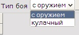
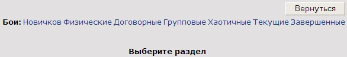
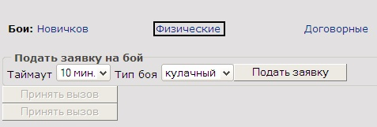
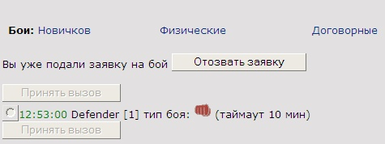
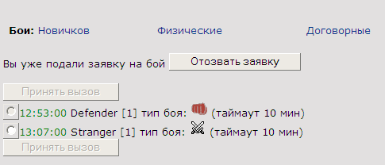
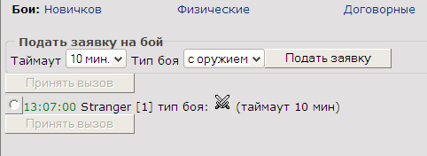
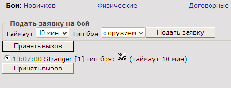
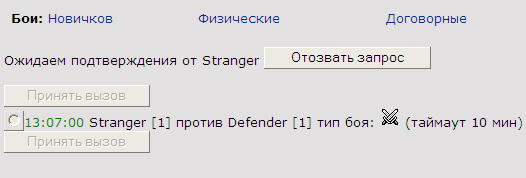
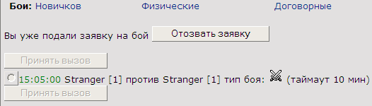

|
Курсы
Регистрация
Методика
Оглавление
Для учащихся

Статьи
Инструменты
Контакты
|
Урок
7.
В преддверие поединка
7.1.
Таблица одиночных заявок .
Мы все ближе и ближе подходим
непосредственно к поединку персонажей и в этом уроке рассмотрим механизм работы
с заявками на бой.
Чтоб перейти в фазу поединка (сейчас будем
рассматривать одиночный поединок двух соперников), один игрок должен создать
заявку, а другой принять ее. Таким образом, мы должны создать таблицу, где будут
сохраняться созданные игроками заявки.
Наша таблица zayavki на SQL
для этих целей будет выглядеть так:
/*Таблица Заявок для физического боя 1 х 1 */
CREATE TABLE `zayavki` (
`ZV_ID` BIGINT unsigned NOT NULL auto_increment,
/*номер заявки*/
`CHAR1_NAME` Char(32) NOT NULL, /*Ник 1 игрока*/
`level1` INT NOT NULL, /*level 1 игрока*/
`CHAR2_NAME` Char(32), /*Ник 2 игрока*/
`level2` INT, /*level 2 игрока*/
`ZDATA` DATE, /*дата заявки*/
`ZTIME` TIME, /*время заявки*/
`ZTYPE` SMALLINT(2) unsigned, /*Тип заявки*/
`ZTIMEOUT` SMALLINT(2), /*Таймаут заявки*/
PRIMARY KEY (`ZV_ID`)
) TYPE=MyISAM; |
Итак, каждая новая заявка имеет свой уникальный
номер, который содержится в поле
ZV_ID. Ник
создающего заявку сохраняется в поле
CHAR1_NAME. По
большому счету рациональнее было бы сохранять
USER_ID игрока из таблицы users,
но для разнообразия будем сохранять строку ника персонажа.
level1
- будет хранить уровень подающего, а
level2
- принимающего заявку.
Каждая заявка на поединок должна иметь дату и время ее
создания (подачи). Эти два значения будем хранить соответственно в полях -
ZDATA
и
ZTIME. Также нас
может заинтересовать информация о типе заявки - кулачный или бой с
использованием оружия. Для этих целей будем использовать поле
ZTYPE. И последнее -
введем также поле
ZTIMEOUT, которое
будет содержать значение интервала времени допустимого для хода соперника. Если
противник долго не отвечает на ход и исчерпал свой лимит времени, указанный в
ZTIMEOUT боя, то
второй игрок может завершить бой технической победой.
Смотрите SQL скрипт таблицы zayavki
здесь.
7.2.
Кулачные бои и бои с оружием.
Как мы выяснили в прошлом пункте нашего
урока, поле
ZTYPE отвечает за тип
поданной заявки. У нас есть только два значения этого параметра - бой с
оружием или кулачный бой. На страничке это будет выглядеть так:

Если выбран кулачный тип боя, то перед началом поединка
должно обязательно выполниться следующее событие - сброс всего оружия и доспехов
из слотов в рюкзак. Если тип боя "с оружием", то естественно - персонаж должен
оставаться в полном боевом облачении.
Кроме того тип боя может влиять на количество очков опыта
получаемых за победу в поединке. Но это уже отдельный разговор.
7.3.
Подача заявки на бой.
Для подачи заявки давайте создадим страницу
zayavka.phtml. В обычном состоянии эта страница должна
содержать несколько разделов меню для доступа к созданию разных видов заявок.
Это - бои Новичков, Физические бои, Договорные, Групповые и Хаотичные бои. Кроме
того можно еще в этой странице выводить текущие и завершенные бои. Для простоты
(в учебных целях) мы будем создавать только один вид заявок - заявка для
проведения Физического боя. Вид такой странички будет примерно таким:

На HTML описание такого меню будет выглядеть так:
<TABLE width=100% cellspacing=1 cellpadding=1>
<TR><TD colspan=8 align=right>
<INPUT class=btn TYPE=button value="Вернуться" onclick="gotoBack()">
</TD></TR>
<TR>
<TD class=m width=40> <B>Бои:</B></TD>
<TD class=btn><A HREF="zayavka.phtml?level=novice&NickName=<?echo
$aNickName; ?>">Новичков</A></TD>
<TD class=btn><A HREF="zayavka.phtml?level=fiz&NickName=<?echo $aNickName;
?>">Физические</A></TD>
<TD class=btn><A HREF="zayavka.phtml?level=dog&NickName=<?echo $aNickName;
?>">Договорные</A></TD>
<TD class=btn><A HREF="zayavka.phtml?level=grup&NickName=<?echo $aNickName;
?>">Групповые</A></TD>
<TD class=btn><A HREF="zayavka.phtml?level=haot&NickName=<?echo $aNickName;
?>">Хаотичные</A></TD>
<TD class=btn><A HREF="zayavka.phtml?level=tek&NickName=<?echo $aNickName;
?>">Текущие</A></TD>
<TD class=btn><A HREF="zayavka.phtml?level=zav&NickName=<?echo $aNickName;
?>">Завершенные</A></TD>
</TR></TABLE> |
Параметр
level
определяет вид поединка. Для рассматриваемого нами Физического боя этот
параметр равен (
level=fiz
)
При выборе игроком Физического поединка, у него должна отобразиться следующая
картина:

Игрок может выбрать тайм-аут поединка от 3 до 10 минут, тип боя (пока
будем рассматривать только кулачный бой) и нажать кнопку "Подать заявку"
Эта форма на HTML может быть просто
реализована таким образом:
print('<FIELDSET><LEGEND><B>Подать заявку на бой</B> </LEGEND>');
print('Таймаут <SELECT class=btn NAME=timeout><OPTION value=3>3 мин.<OPTION
value=4>4 мин.<OPTION value=5>5 мин.<OPTION value=7>7 мин.<OPTION value=10
selected>10 мин.</SELECT> Тип боя <SELECT class=btn NAME=bt><OPTION
value=1>с оружием<OPTION value=0>кулачный</SELECT>');
print("<INPUT TYPE=hidden name=level value=fiz><INPUT TYPE=hidden name=NickName
value=".$aNickName.">");
print('<INPUT class=btn TYPE=button name=open value="Подать
заявку" onClick="setZayavka()"> ');
print('</FIELDSET>'); |
Как Вы видите, эта форма содержит список
выбора таймаута боя: (3,4,5,7,10 минут) а также выбор типа боя (кулачный и с
оружием). После того как играющий определяется с выбором, он нажимает на кнопку
"Подать заявку" вследствие чего вызывается функция
setZayavka,
которая выглядит так на языке
JavaScript.
function setZayavka(){
var v = document.F1.timeout.value;
var b = document.F1.bt.value;
location.href='zayavka.phtml?level=fiz&bt='+b+'&settime='+v+'&NickName=<?php
echo $aNickName;
?>';
} |
Эта функция передает в этот же файл
zayavka.phtml кроме
параметра
level еще дополнительные
параметры
bt и
settime, которые
несут в себе информацию о типе боя и таймауте соответственно.
Естественно, что мы должны проверить эти значения
на входе нашего скрипта:
// подали заявку
if (!empty($_GET['settime'])){
$lSetZayavka = 1;
$aTimeOut = $_GET['settime'];
$aBT = $_GET['bt'];
} |
Установив флаг
$lSetZayavka, мы чуть
дальше в коде нашего файла
zayavka.phtml можем засунуть поданную игроком заявку в
таблицу заявок:
// Подали заявку - засовываем в таблицу
if ($lSetZayavka){
$query = "INSERT INTO
zayavki(ZV_ID,CHAR1_NAME,level1,ZDATA,ZTIME,ZTYPE,ZTIMEOUT)
values('$aUserID','$aNickName','$aUserLevel','".Date('Y-m-d')."','".Date('H:i')."','$aBT','$aTimeOut')";
$result = mysql_query($query) or
die("Query failed : " . mysql_error());
$aUser1ID = $aUserID;
$lInZayavka1 = 1;
} |
При выполнении вышеприведенного
SQL запроса, в таблицу
zayavki вставляется запись с ником персонажа
подавшего заявку, уровнем персонажа, а также датой и временем подачи, кроме того
также заполняются поля типа боя и таймаута.
Переменная
$aUser1ID
хранит информацию об идентификаторе подавшего заявку.
Когда скрипт отработает, наше окно заявок в браузере примет такой вид:

Надо учитывать, что кроме нашей с Вами тестовой заявки, может
быть подано еще немало заявок других игроков, ведь мы пишем игру не для двух
играющих, а для гораздо большего их количества.
Следующий фрагмент
PHP кода из нашего файла
zayavka.phtml как раз отвечает за визуализацию перечня
заявок в окне браузера игрока:
//////////////// Показываем заявки
////////////////
print('<INPUT class=btn TYPE=submit
value="Принять вызов" id="confirm1" NAME="confirm1"><BR>');
$query = "SELECT * FROM zayavki";
$result = mysql_query($query) or
die("Query failed : " .
mysql_error());
while ($aRow =
mysql_fetch_array($result))
{
$aTime = $aRow["ZTIME"];
$aNick = $aRow["CHAR1_NAME"];
$aNick2 = $aRow["CHAR2_NAME"];
$aTimeOut = $aRow["ZTIMEOUT"];
$aBattleType = $aRow["ZTYPE"];
$aLevel1 = $aRow["level1"];
$aUserID = $aRow["ZV_ID"];
// Если это наша заявка
if ($aNick == $aNickName){
// пока никем не выбрана
if ($aNick2 != ''){
print("<INPUT TYPE=radio NAME=gocombat value=$aUserID disabled><font
color=green>".$aTime."</font> ".$aNick." [$aLevel1] против ".$aNickName."
[$aUserLevel] тип боя: <img src=Items\fighttype".$aBattleType.".gif> (таймаут
$aTimeOut мин)<br>");
}
// кем-то выбрана и ждет подтверждения
else
{
print("<INPUT TYPE=radio NAME=gocombat
value=$aUserID disabled><font color=green>".$aTime."</font> ".$aNick."
[$aLevel1] тип боя: <img src=Items\fighttype".$aBattleType.".gif> (таймаут
$aTimeOut мин)<br>");
}
}
// не наше заявка
elseif ($aNick2 != $aNickName)
{
print("<INPUT TYPE=radio NAME=gocombat
value=$aUserID onClick='enable_btn(".$lInZayavka1.",".$lInZayavka2.")'><font
color=green>".$aTime."</font> ".$aNick." [$aLevel1] тип боя: <img src=Items\fighttype".$aBattleType.".gif>
(таймаут $aTimeOut мин)<br>");
}
// не наша заявка но выбрана нами
if ($aNick2 == $aNickName){
print("<INPUT TYPE=radio NAME=gocombat
value=$aUserID disabled><font color=green>".$aTime."</font> ".$aNick."
[$aLevel1] против ".$aNickName." [$aUserLevel] тип боя: <img src=Items\fighttype".$aBattleType.".gif>
(таймаут $aTimeOut мин)<br>");
}
}
print('<INPUT class=btn TYPE=submit value="Принять
вызов" id="confirm2" NAME="confirm2"><BR>');
print('</form>');
print('<script>
enable_btn( '.$lInZayavka1.','.$lInZayavka2.' );
</script>');
//////////////////////////////////////////////// |
Есть несколько условий касательно
заявок. Во-первых, поданная нами заявка не может быть принята нами же - это
вполне естественно. Если срабатывает условие ($aNick
== $aNickName) то мы выводим
radio-кнопку в неактивном состоянии и соответственно
игрок не может ее выбрать. Во-вторых в этом коде учитывается отображение режима,
когда подана чужая заявка, которую мы можем выбрать. Вот как это выглядит.

Заявку игрока Stranger мы уже можем выбрать,
хотя это ни к чему не приведет. Потому что не активны кнопки "Принять вызов".
Это вызвано тем, что мы не можем принять чужую заявку, пока не отозвали свою.
7.4.
Прием
чужой заявки
Предположим, мы не подавали никаких заявок, и видим чужую
заявку:

Радио-кнопка выбора заявки у нас активна и мы нажимаем на нее. В
результате у нас стают активными кнопки "Принять вызов"

Этот процесс реализован в
JavaScript
функции
enable_btn, в которую
передаются параметры
zayavka1 и
zayavka2. Сама функция выглядит так:
function enable_btn( zayavka1,zayavka2 ){
var aInp = document.getElementsByTagName('INPUT');
document.getElementById('confirm1').disabled = true;
document.getElementById('confirm2').disabled = true;
if( (zayavka1 == 0) && (zayavka2
== 0)){ // мы не можем принимать чужую заявку,
будучи в заявке и сами подав ее
for(i=0; i < aInp.length; i++){
if( aInp[i].name.indexOf('gocombat') != -1
){
if( aInp[i].checked ){
document.getElementById('confirm1').disabled = false;
document.getElementById('confirm2').disabled = false;
}
}
}
}
} |
Как видно из кода кнопки "Принять заявку"
(confirm1 и
confirm2)
становятся активными только в случае если мы не подали заявку и не приняли ее.
Итак, что же будет, когда все условия приема заявки соблюдены и мы
нажимаем на кнопку "Принять вызов" ? Надо заметить, что эти кнопки имеют
тип submit и что естественно
происходит передача параметров формы опять же нашему файлу zayavka.phtml,
но теперь уже методом POST.
Прием этих параметров осуществим так:
// Выбрали заявку
if (!empty($_POST['confirm1'])
|| !empty($_POST['confirm2'])){
$aBattleType = $_POST['level'];
$aNickName = $_POST['NickName'];
if (!empty($_POST['gocombat']))
{
$aChoosen = $_POST['gocombat'];
// ID бойца, чью заявку выбрали
}
else
{
print("<SCRIPT>location.href=zayavka.phtml?level=fiz&NickName=$aNickName");
}
} |
Параметр
gocombat
- это по сути ID игрока, заявку
которого мы выбираем (вы помните, что радио-кнопки мы определяли как (<INPUT
TYPE=radio NAME=gocombat value=$aUserID
...)
Теперь, так как мы являемся принимающей стороной, заполним вторую
часть полей записи в заявке.
// Выбрали заявку - засунем ее во вторую часть
строки заявки
if ($aChoosen != 0){
$query = "SELECT * FROM zayavki where ZV_ID='$aChoosen'";
$result = mysql_query($query) or
die("Query failed : " .
mysql_error());
$aRow = mysql_fetch_array($result);
$aUser1Name = $aRow["CHAR1_NAME"];
if (mysql_num_rows($result)
> 0 ){
$query = "UPDATE zayavki SET CHAR2_NAME='$aNickName',
level2='$aUserLevel' where ZV_ID='$aChoosen'";
$result = mysql_query($query) or
die("Query failed : " . mysql_error());
$aUser2ID = $aUserID;
$lInZayavka2 = 1;
}
else{
// Заявку уже отозвали
}
} |
Все! Теперь обе части заявки заполнены - то есть
в ней присутствует как первая так и вторая сторона. На странице в браузере у
принимающей стороны это будет выглядеть так:

у подающей стороны так:

Принимающая сторона может отозвать запрос, а подающая -
отозвать заявку.
7.5.
Отзыв заявки.
Отзыв запроса.
Вполне возможно, что по каким-то причинам, обе
стороны участвующие в заявке могут внезапно расхотеть проводить поединок.
Подающий заявку может нажать на кнопку "Отозвать заявку", которая приводит к
выполнению функции deleteZayavka() код которой на JavaScript
выглядит следующим образом:
function deleteZayavka(){
location.href='zayavka.phtml?delete=1&level=fiz&NickName=<?php
echo $aNickName; ?>';
} |
Все предельно просто - мы передаем скрипту флажок
delete=1,
сигнализирующий о том, что мы хотим отменить нашу заявку. PHP
сценарий принимает этот параметр:
// отзываем заявку
if (!empty($_GET['delete'])){
$lDeleteZayavka = true;
$lInZayavka1 = 0;
} |
устанавливая
$lDeleteZayavka
в значение
true и дальше мы
обрабатываем эту ситуацию:
// Отозвали заявку - уберем ее из таблицы
if ($lDeleteZayavka){
$query = "DELETE FROM zayavki WHERE CHAR1_NAME='$aNickName'";
$result = mysql_query($query) or
die("Query failed : " .
mysql_error());
$aUser1ID = 0;
$lInZayavka1 = 0;
} |
Принимающий заявку тоже может
отозвать свой запрос, нажав на кнопку "Отозвать запрос". Это действие активирует
JavaScript функцию otzivZapros(), которая выглядит столь же
просто:
function otzivZapros(){
location.href='zayavka.phtml?otziv=1&level=fiz&NickName=<?php
echo $aNickName; ?>';
} |
В это раз,
мы передаем скрипту флажок
otziv=1,
сигнализирующий о том, что игрок имеет намерение отменить свой запрос.
PHP сценарий в нашем файле zayavka.phtml
принимает этот параметр:
// отзываем запрос
if (!empty($_GET['otziv'])){
$lOtzivZapros = 1;
} |
устанавливая
$lOtzivZapros
в значение
true и дальше мы
обрабатываем эту ситуацию:
// Отозвали запрос - уберем из 2ой части таблицы
if ($lOtzivZapros){
$query = "UPDATE zayavki SET CHAR2_NAME='',
level2='' where CHAR2_NAME='$aNickName'";
$result = mysql_query($query) or
die("Query failed : " .
mysql_error());
$aUser2ID = 0;
$lInZayavka2 = 0;
} |
После этого заявка подавшего снова может быть
принята кем-нибудь!
Полный текст файла zayavka.phtml Вы можете переписать
тут.
В следующем уроке мы наконец-то научимся входить в бой, проведем первые
поединки, рассмотрим вопросы выведения результатов боя и просмотра статистики по
окончанию поединка.
|
|